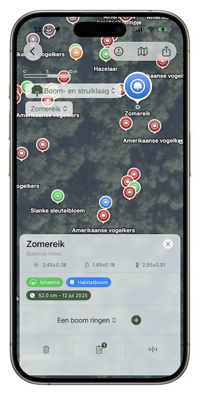

Uw digitale bosassistent


Uw digitale bosassistent
View and navigate detailed forest maps with precise tree locations marked with interactive pins and species information.
Instantly identify tree species like Oak (Quercus robur) with detailed scientific names and habitat information.
Comprehensive tree database with measurements, growth data, and habitat classifications for forest management.
Switch between different data layers including native species, invasive species, and habitat zones.
Add new trees to your forest inventory with a simple tap, including location tagging and species classification.
Work in remote forest locations without internet connectivity and sync data when you return to coverage.